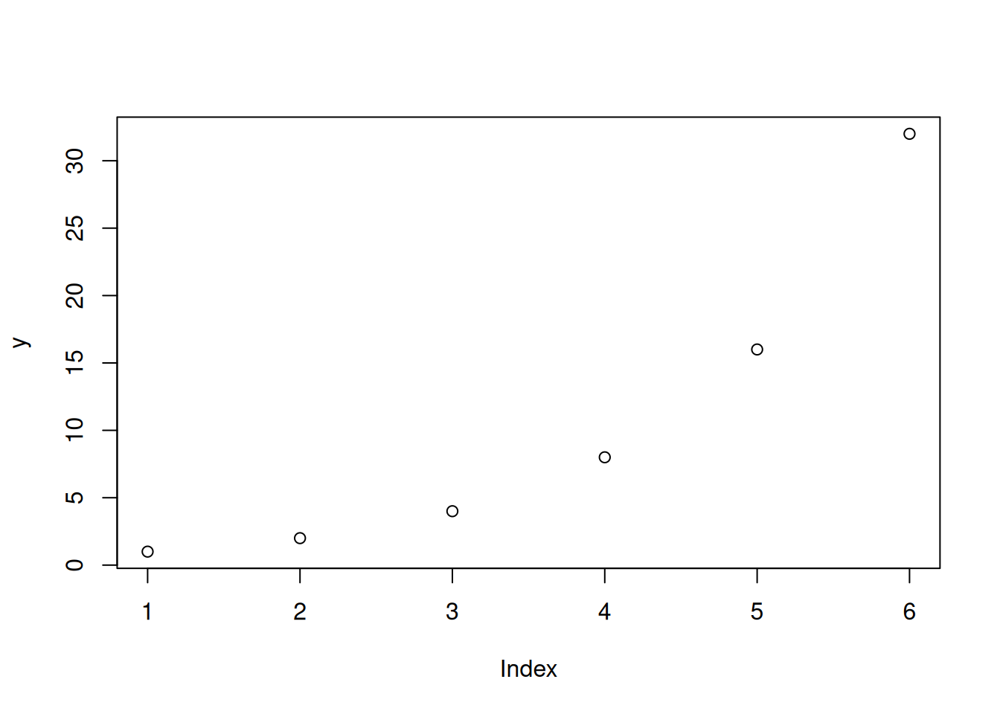
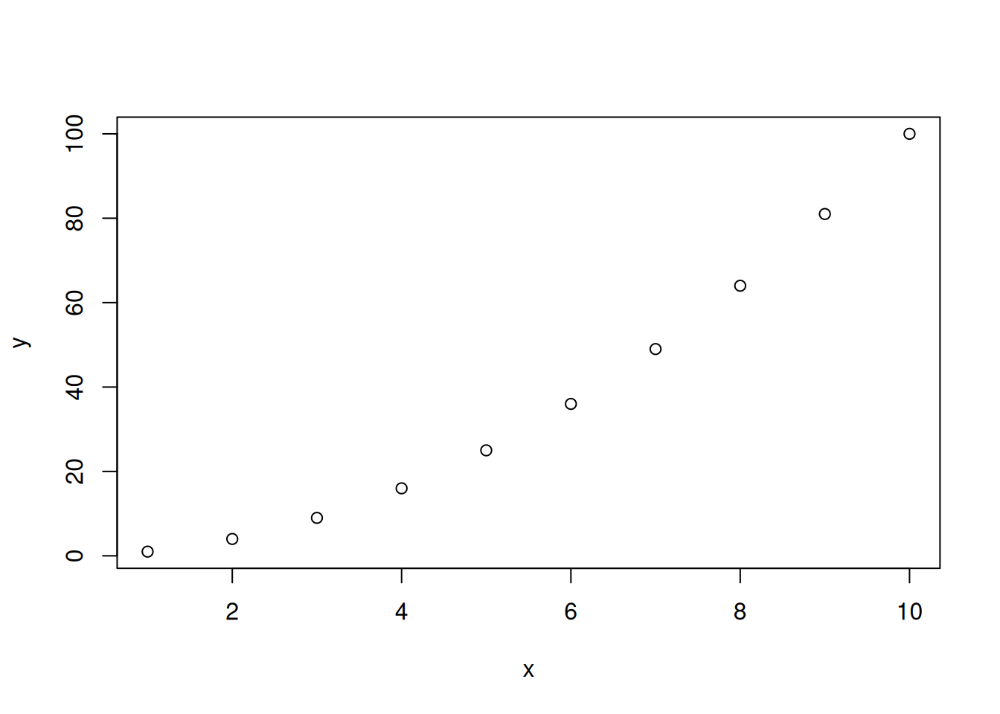
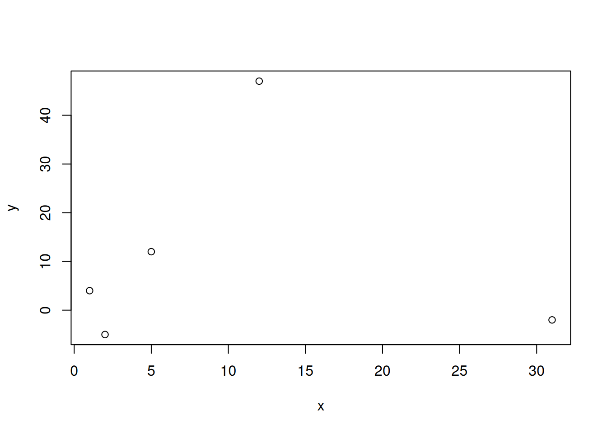
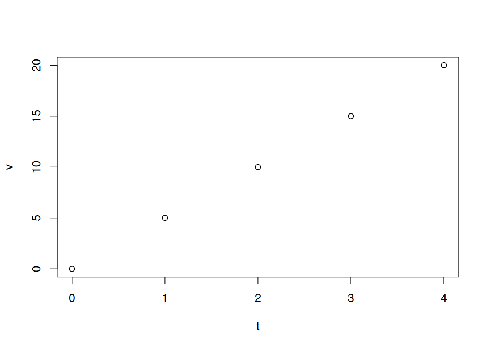
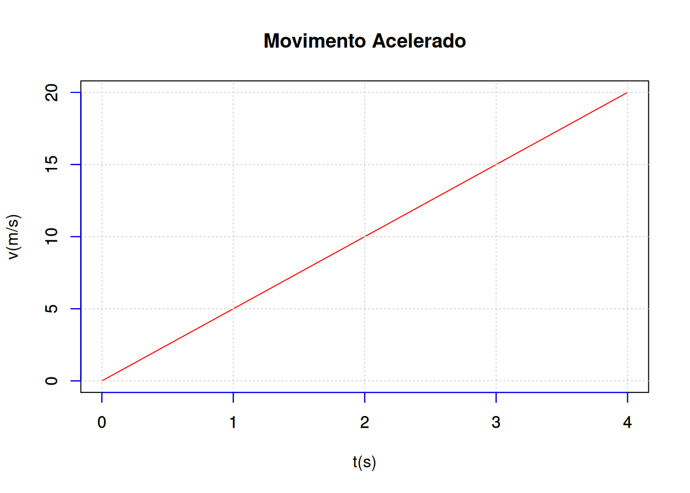
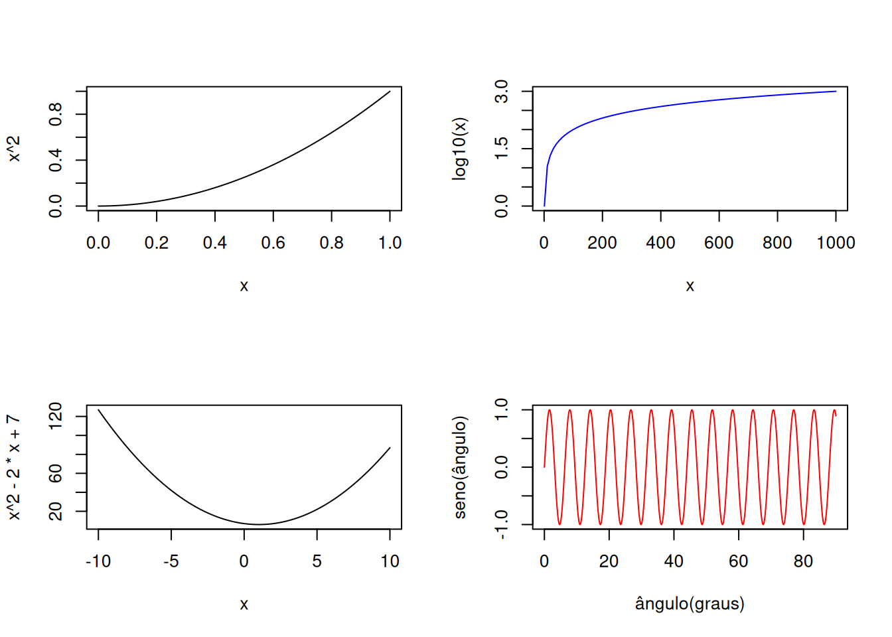
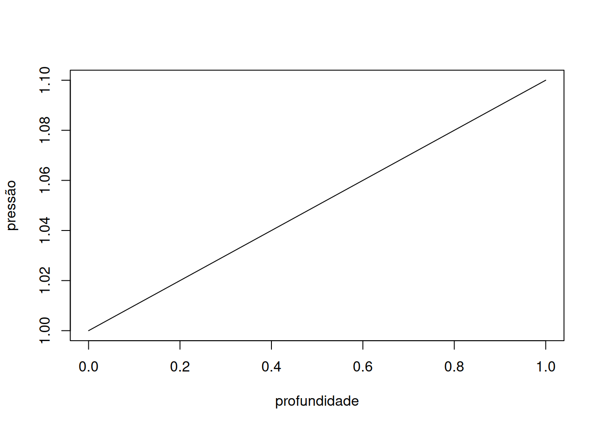
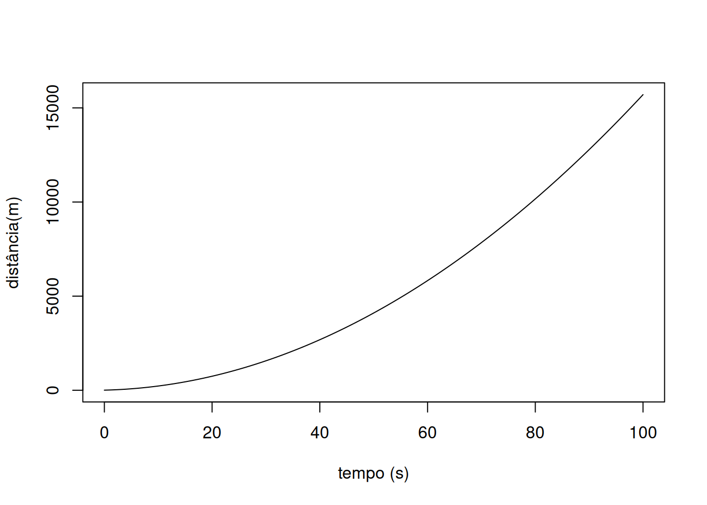

y = c(1,2,4,8,16,32) # vetor de números
plot(y) # comando pra "plotar" o gráficoGráficos básicos e simulações
“Plotando” com o comando plot (meio óbvio!)
Você não precisa instalar mais nada pra trabalhar com gráficos no
R. Isso porque o sistema já possui um conjunto de pacotes na sua instalação, incluindo um pacote para gráficos (graphics). Para fazer seu primeiro gráfico, basta copiar e colar o trecho abaixo num script aberto no Rstudio, tanto faz se instalado ou nas nuvens (RStudio Cloud), executando-o em seguida.

Se você obteve como resultado a imagem acima, parabéns !! Você fez o seu primeiro gráfico no
R !!! Tá achando pouco ?! Você fez um gráfico numa linguagem orientada a objeto em programa de computação estatística !!! Uma dica importantíssima: como se pode observar do código acima, “para se colocar valores em sequência, como numa coluna de planilha eletrônica, o
R precisa”ler” um vetor iniciado por “c” (de “concatenated”), seguido dos valores entre parênteses (()) e separados por vírgula ! Agora, se quiser caprichar um pouco mais, pode colocar uma expressão sobre uma sequência de números igualmente espaçados. Exemplificando:
x = 1:10 # vetor de valores de 0 a 10, com intervalo unitário
y = x^2 # expressão aplicada ao vetor "x"
plot(x,y) # gráfico produzido
xe y. Também dá pra elaborar o gráfico sem precisar criar a variável independente
y, apenas inserindo sua função em x no próprio comando. Experimente:x= 1:10
plot(x,x^2) Ou….pode também escolher os números que deseja plotar:
x = c(1,2,5,12,31)
y= c(4,-5,12,47,-2)
plot(x,y)
x e y.Incrementando um pouquinho os gráficos
Existe uma quantidade imensa de tutoriais na web, além de uma vasta literatura sobre o uso do pacote
graphicspara se construir gráficos. Mas a proposta aqui é que você aprenda apenas o fundamental pra elaborar um gráfico, pois o objetivo é animá-lo, e não complicá-lo !! Mesmo assim, alguns argumentos da função
plot podem ilustrar o potencial de seu uso. Como explicado anteriormente, ainda que as funções do R possuam diversos argumentos, você pode executá-la com poucos ou apenas um, somente. Os argumentos da função
plot são os descritos abaixo:plot(x, y = NULL, type = "p", xlim = NULL, ylim = NULL,
log = "", main = NULL, sub = NULL, xlab = NULL, ylab = NULL,
ann = par("ann"), axes = TRUE, frame.plot = axes,
panel.first = NULL, panel.last = NULL, asp = NA,
xgap.axis = NA, ygap.axis = NA,
...) Um pouco confuso, é ?! Explicando alguns dos argumentos acima, e outros que funcionam com a função
plot:type - tipo de plot: pontos "p", linhas "l", pontos+linhas com cruzamento "o", pontos+linhas sem cruzamento "b", linhas verticais "h", steps "s", sem representação "n";
cex - tamanho do ponto (ex: 0.5, 20);
lty - "line type", tipo da linha; pode se representado por um valor (1,2,...) ou por "solid", "dotted", "dashed", "dotdash", "longdash", "twodash";
lwd - "line width", largura da linha (6 níveis)
pch - tipo de ponto (1-25)
xlim, ylim - limite dos eixos; ex: ylim=c(-2,10)
xlab, ylab - etiquetas ("label") dos gráficos
col - cor (números ou nomes); ex: "red", "orange"
main - título do gráfico
sub - subtítulo do gráfico
log - eixo logaritmo O gráfico de pontos não é o único que se pode fazer com o pacote
graphics. Também dá pra fazer tudo isso abaixo, com cada função apresentando os seus próprios argumentos:plot() - pontos, linhas, pontos e linhas
barplot() - plot de barras
hist() - histograma
boxplot() - gráfico Box-Whiskers
persp() - gráfico 3D
pie() - gráfico de torta
dotplot() - sequência de valores (com *jitter*, espalhameto de pontos)
pairs() - painel múltiplo com todas as variáveis plotadas
matplot() - plota vetores de matrizes, como *dataframes* Mas chega de enrolação !! Para sentir de perto do “poder” desse pacote básico para gráficos, veja a imagem que segue retirada do MAPA, 1o. Bimestre de Ciências da Natureza e Suas Tecnologias:

Agora experimente reproduzir a imagem do MAPA copiando, colando e executando o trecho abaixo numa janela de script do
RStudio:t <- c(0,1,2,3,4) # introduz os dados
v <- c(0,5,10,15,20)
plot(t,v) # faz o gráfico
Agora, dá pra incrementar um pouco mais, para aproximar-se da imagem da figura de referência do MAPA. Segue o trecho pra cópia e execução:
t <- c(0,1,2,3,4) # introduz os dados
v <- c(0,5,10,15,20)
plot(t,v,main="Movimento Uniforme: Aceleração", # realiza o gráfico com título...
xlab="t(s)", ylab="v(/s)", # ... etiquetas nos eixos....
type="l", col="red") # ... tipo e cor da linha, e ....
grid() # divisão para facilitar a visualização Dando tudo certo, segue o que se produz com o código:

graphics do R, tal como apresentado no MAPA - Ciências da Natureza, 1o. Bimestre, pg. 134 (2024).Simulando curvas com a função curve
Uma situação bem comum no aprendizado em Matemática e de alguns temas em Ciências da Natureza se dá quando desejamos observar como uma variável se comporta em relação a outra, fornecida uma equação para tal. Nesse caso, pode-se utilizar a função
curve do R, mais simples até em seus argumentos que a funçãoplot. Para ilustrar isso, execute separadamente os exemplos abaixo num script:curve(x^2) # função quadrática
curve(log10(x), xlim=c(1,1e3), col="blue") # função logarítmica e coloração
curve(x^2-2*x+7, xlim=c(-10,10)) # função quadrática com limites no eixo X
curve(sin(x), from=0, to=90,
xlab="ângulo(graus)", ylab="seno(ângulo)", col="red", n=1000) # com etiquetas nos eixos
curve. Ilustrando-se mais objetivamente, pode-se reproduzir (como também modificar) o trecho de código que segue logo após a figura abaixo extraída do MAPA:

x =0:70
curve(1/10*x + 1,
xlab="profundidade", ylab="pressão")
Muito legal também é construir gráficos a partir de relações gráficas a partir de equações, tal como a apresentada na figura abaixo (MAPA):

Usando-se a função
curve pode-se obter uma simulação da relação apontada na seta, a partir do trecho de código abaixo:s0 = 5 # distância inicial (m) # parâmetros iniciais pra equação de distância
v0= 7 # velocidade inicial (m/s)
a = 3 # aceleração (m/s^2)
curve(s0+v0*x+1/2*a*x^2, # a equação de distância
xlim=c(0,100), # limites do eixoi de tempo
xlab="tempo (s)", ylab="distância(m)") # etiquetas dos eixos
curvedo R para simular uma equação para distância percorrida em movimento horizontal (MAPA, 1o. Bim., C. Natureza, p. 137, 2024).